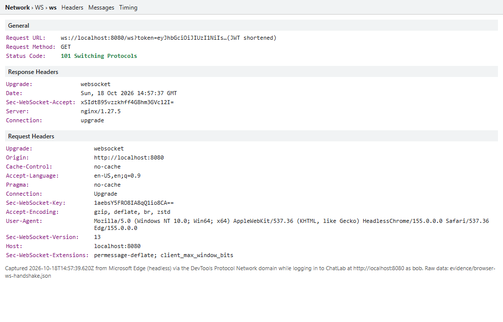

MIT 203 — Advanced System Design and Implementation · Laboratory Activity No. 4
| Student | Lim, John Fredrick N. |
|---|---|
| Student no. / Section | 2021-01213 · MIT 1A |
| Date performed | 18 October 2026 (all measurements, timestamps in the evidence pack are UTC) |
| Repository | https://github.com/yoyodevc/chatlab — start with cp .env.example .env, then docker compose up --build |
I used Claude (Anthropic) to help me accomplish this laboratory activity. Claude helped with writing the ChatLab source code (app/, nginx/, client/), the test and evidence scripts in scripts/, running the tests on my computer, and drafting this report and the answers to the guide questions. The tests were run on my own machine with Docker, and the results in the observation tables come from the timestamped files in evidence/. I reviewed the code, the results and the answers, and I take responsibility for the submitted work.
ChatLab is one Node.js 20 application (Express for REST, the ws package for WebSockets) running behind an NGINX 1.27 gateway, both started by Docker Compose. Only the gateway publishes a port (8080); the application listens on port 3000 inside the Docker network only. Users, rooms and messages are seeded from app/data.json with bcrypt-hashed passwords and held in memory.
| Component | Responsibility |
|---|---|
nginx/nginx.conf | Routes /api/, /ws and /; forwards Upgrade/Connection; rate limits (API 10 r/s, burst 20; login 5 r/s, burst 5; status 429); access log built from $uri so query strings are never logged; proxy_read_timeout 60s on /ws. |
app/server.js | REST v1 and v2, WebSocket upgrade handling (Origin check, JWT check), message validation (4 KB raw, 500 characters of text), rooms map, heartbeat (30 s ping), v1 deprecation headers. |
app/auth.js | Login (bcrypt compare, constant-time dummy hash for unknown users), JWT issue (HS256, 15 min, issuer chatlab, secret from JWT_SECRET), verification pinned to HS256. |
app/authz.js | The single function can(user, action, room, msg) that holds every permission rule of Section 4.2. |
Design decisions worth noting: (1) the sender of a message is always the verified token subject and any client-supplied from is ignored; (2) membership is read live from state on every check while the role comes from the token; (3) the server re-checks permission on delivery, not only on send, so a removed member stops receiving immediately; (4) a socket whose token has expired is closed with code 4401 on its next message or heartbeat; (5) HEARTBEAT_MS and TOKEN_TTL are configurable by environment variable so that the timeout and expiry experiments can be run without changing code.
| Test | Result observed | Remarks |
|---|---|---|
| Message received by all 3 clients in the room | alice, bob (sender) and carol all received it | Sender is included, as required. Evidence 1-01. |
| Message received by a client in a different room | Not received (client in dev got nothing) | Broadcast iterates only over the room's socket set. |
| Invalid JSON sent | {"type":"error","code":"BAD_FORMAT","detail":"invalid JSON"} | Connection stayed open. |
| Unknown message type sent | Error UNKNOWN_TYPE | A message with no type returned BAD_FORMAT. |
| 5 KB message sent | Error TOO_LARGE | Server kept running; a following message was delivered and the sender's socket was still open. A 501-character text returned TOO_LONG. |
| Client frozen (Ctrl+Z): time until server closes it (s) | 57.8 s | Simulated with a client that never answers pings (autoPong:false), which is what a suspended wscat does. Server terminated the socket (client saw code 1006). Evidence 1-02. |
| Average time from send to receive, 20 messages (ms) | 2.3 ms (min 2, max 3) | Loopback, through the NGINX gateway, measured as time until the sender receives its own broadcast. |
The frozen-client time is not constant: pings go out on a fixed 30 s timer, so a client that freezes just after a tick is dropped about 60 s later, and one that freezes just before a tick about 30 s later. 57.8 s is consistent with freezing shortly after a tick.
Q1. HTTP request–response versus WebSocket; why WebSocket suits chat.
HTTP is client-initiated: every exchange is a new request that carries its own headers, and the server can only answer, never speak first. A WebSocket starts as an HTTP request and then upgrades the same TCP connection to a persistent, full-duplex channel with 2–14 bytes of framing per message, so either side can send at any time. A chat application needs the server to push a message to everyone in a room the moment someone writes it. With polling, the delay is up to one polling interval (on average half of it), most requests return nothing, and each carries full headers and authentication. With WebSockets, the 20-message test measured 2.3 ms from send to delivery over one open connection, and no traffic is produced when the room is quiet.
Q2. Opening handshake and headers.
The client sends an HTTP/1.1 GET /ws with Connection: Upgrade, Upgrade: websocket, Sec-WebSocket-Version: 13, a random Sec-WebSocket-Key and, from browsers, an Origin. The server replies 101 Switching Protocols with Upgrade: websocket, Connection: upgrade and Sec-WebSocket-Accept, which is the base64 of SHA-1(key + a fixed GUID); this proves the server understood the protocol. After the 101, the same TCP connection carries WebSocket frames. My captured exchange through the gateway (evidence 2-02) shows HTTP/1.1 101 Switching Protocols from nginx/1.27.5 with Sec-WebSocket-Accept: s3pPLMBiTxaQ9kYGzzhZRbK+xOo=, which is the correct value for the key dGhlIHNhbXBsZSBub25jZQ== that I sent. Figure 1 shows the same handshake as made by a real browser (Microsoft Edge) when the ChatLab page opens its WebSocket after login: the request carries Upgrade: websocket, Connection: Upgrade, Sec-WebSocket-Version: 13, a fresh Sec-WebSocket-Key, Origin: http://localhost:8080 and Sec-WebSocket-Extensions: permessage-deflate, and the reply is 101 Switching Protocols.

Figure 1 — WebSocket handshake of the browser client through the gateway. The panel was rendered from the headers recorded by the DevTools Protocol Network domain (evidence/browser-ws-handshake.json); the token in the URL is shortened.
Q3. Why a heartbeat; what happens to the rooms map without one.
TCP does not tell a server that the other side has silently disappeared (a crashed process, a laptop that went to sleep, a dropped Wi-Fi link): the connection can look open for minutes or hours. Without a heartbeat, such dead sockets stay in the rooms sets forever. The map grows without bound, every broadcast keeps writing to dead sockets and buffering data for them, and other users still see them as present. The ping/pong cycle detects them: the frozen-client test closed the dead socket after 57.8 s. A second benefit is that periodic traffic keeps intermediaries such as the gateway from closing a quiet but healthy connection (see Exercise 2, Q3).
Q4. Two copies behind a load balancer.
The rooms map, the message history and the memberships are in the memory of one process. If Alice is connected to copy A and Bob to copy B, they are both in “general” but A's broadcast loop never sees Bob's socket, so they do not receive each other's messages; the two copies also hold different message history and different membership changes. Sticky sessions do not fix this because the problem is cross-node delivery, not where one client lands. The usual solution is a shared backplane: each node publishes every chat event to a broker (Redis pub/sub, NATS or Kafka) and every node delivers events from the broker to its own local sockets, while history, rooms and memberships live in a shared database.
| Test | Result observed | Remarks |
|---|---|---|
| Direct access to app on port 3000 from host | Connection refused (curl exit 7) | Compose uses expose, not ports, for the app. Evidence 2-01. |
| WebSocket connection through gateway | 101 Switching Protocols | Evidence 2-02 and the GET /ws 101 lines in the gateway log. |
| WebSocket without Upgrade / Connection headers | Handshake rejected with HTTP 404 Not Found | After deleting the two proxy_set_header lines and reloading NGINX. Gateway log: GET /ws 404. Evidence 2-06. |
| 100 rapid requests: count of 200 responses | Parallel burst: 21. Sequential curl loop (lab command): 89 | Evidence 3-01 (parallel) and 2-05 (sequential loop, about 7 s long). |
| 100 rapid requests: count of rejected responses | Parallel burst: 79 × 429. Sequential loop: 11 × 429 | limit_req_status 429. Burst of 20 plus 1 immediate request explains 21; the slower loop is refilled at 10 r/s, giving about 20 + 7 s × 10 ≈ 90 accepted. |
| v1 response shape and deprecation headers | Flat array [{"id","from":"bob","text","ts"}]; headers Deprecation: true, Sunset: Wed, 30 Jun 2027 00:00:00 GMT, Link: </api/v2/rooms>; rel="successor-version" | Headers are added to every v1 response, including 401 and login responses. Evidence 2-03, 3-03. |
| v2 response shape | {"items":[{"from":{"username":"bob","role":"member"},...}],"nextCursor":...} | No deprecation headers. With limit=1 the cursor was msg_1; it is null on the last page. Evidence 2-04. |
| Idle WebSocket closed after (s) | 61.2 s (code 1006) | Measured with the server heartbeat set to 120 s so that no ping reaches NGINX. With the normal 30 s heartbeat the connection is not closed by the gateway; I did not time that case. Evidence 2-07. |
Q1. Gateway responsibilities: implemented and missing.
A gateway is the single entry point to a system. Typical responsibilities are routing, TLS termination, authentication and token validation at the edge, authorization hooks, rate limiting and quotas, load balancing and health checks, API version routing, request/response transformation, caching, request tracing and logging, CORS, request-size limits, and protection against abuse (WAF, bot filtering). In this laboratory I implemented: routing of REST, WebSocket and static traffic; Upgrade forwarding for WebSockets; rate limiting with separate zones for the API and for login; a request id header (X-Request-Id) passed to the app and written to the log; isolation of the application from the host network; and a log format that hides query strings. API versioning is implemented in the application, and the gateway only routes by URI prefix. For production I would add TLS with HSTS, validation of the JWT at the gateway so that unauthenticated traffic never reaches the app, per-user (not only per-IP) limits, connection limits for WebSockets, health checks and load balancing across several app instances, request-size limits, a WAF, central metrics and distributed tracing.
Q2. Why the connection failed without the Upgrade and Connection headers.
Upgrade and Connection are hop-by-hop headers: NGINX does not pass them to the upstream unless told to, and by default it rewrites Connection to close. Without them the application received an ordinary GET /ws, not an upgrade request, so the Node server's upgrade event never fired. The request fell through to Express, which has no /ws route and answered 404; the browser or wscat then reported a failed handshake. The gateway log shows GET /ws with status 404 instead of 101, which confirms that the failure was in the proxying and not in authentication.
Q3. Heartbeat interval longer than the gateway timeout.
proxy_read_timeout closes a proxied connection if nothing has been read from the upstream for that long. Server pings count as upstream traffic and reset the timer. If the heartbeat interval were longer than 60 s, a quiet but perfectly healthy connection would be cut by the gateway before the next ping. I reproduced this by setting the heartbeat to 120 s: an idle, ping-answering client was closed after 61.2 s with code 1006. Users would see random disconnections after a minute of silence, and the server would only notice later through its own cleanup. The heartbeat interval must therefore be clearly shorter than the smallest idle timeout on the path (the 30 s value is half of the 60 s gateway timeout), and the client should reconnect automatically.
Q4. URI versioning versus header versioning; why v1 must keep working.
I used URI versioning (/api/v1/, /api/v2/). It is explicit in logs, browser address bars and curl commands, is trivial to route and rate-limit in NGINX with location blocks, and caches correctly without Vary. Header versioning (Accept-Version: 2) keeps URIs stable and is closer to the idea that a URI names a resource, but it is invisible in logs and links, easy to forget in a test, and harder to route and cache. Version 2 changes the response shape (a flat array becomes an object with items and a structured from), which is a breaking change. Existing clients, such as mobile apps that users have not updated, still parse the old shape, so v1 must keep working until they migrate. The Deprecation, Sunset and Link headers tell client developers the date on which v1 will be removed and where to go.
| Test | Result observed | Remarks |
|---|---|---|
| Login with correct password | 200, {"token": "..."} | Evidence 3-01. |
| Login with wrong password | 401 {"error":"Invalid credentials"} | Same response for an unknown user. Evidence 3-04. |
| REST call with no token | 401 {"error":"Unauthorized"} | Evidence 3-03. |
| REST call with valid token | 200 | |
| REST call with expired token | 401 | Run with TOKEN_TTL=5s, waited 7 s. Evidence 3-07. |
| REST call with tampered token | 401 | Last character of the payload changed. |
| WebSocket with no token | Upgrade rejected, HTTP 401 | |
| WebSocket with valid token | Connected (101) | |
| WebSocket from a different Origin | Upgrade rejected, HTTP 403 | Origin: http://evil.example. Evidence 3-05. Clients that send no Origin header (wscat, curl) are not blocked because the check targets browsers. |
| Client sends a fake “from” field | Delivered with from: "bob" | Bob's socket sent "from":"alice"; the server used the verified token subject. |
| Token visible in gateway access log? | No — 0 lines contain token= | WebSocket lines read GET /ws HTTP/1.1 101. Evidence 3-06. |
The gateway's error log can still contain a full request line (with query string) if an upstream error occurs on /ws; this did not happen in my run but it is a real limitation of passing tokens in the URL.
Q1. The three parts of a JWT; why the payload is readable but not changeable.
A JWT is header.payload.signature, each part base64url-encoded. Decoding Bob's token from my run (evidence 3-02) gives header {"alg":"HS256","typ":"JWT"}; payload {"sub":"bob","role":"member","iat":1792334425,"exp":1792335325,"iss":"chatlab"} — subject, role, issued-at, expiry (exactly 900 s after issue = 15 minutes) and issuer; and a signature, the HMAC-SHA256 of base64url(header) + "." + base64url(payload) under the server secret. The payload is only encoded, not encrypted, so anyone holding the token can read it (which is why secrets must never be put in it). It cannot be altered because any change to the header or payload produces a different HMAC, and an attacker without JWT_SECRET cannot compute the matching signature.
Q2. Why the tampered token failed; the none algorithm.
I changed one character of the payload. The server recomputed the HMAC over the received header and payload, got a value different from the token's signature, and jwt.verify threw an invalid-signature error that the middleware turned into 401. If the server accepted alg: "none", an attacker could write a header with "alg":"none", a payload with "role":"admin", leave the signature empty, and the token would be accepted as valid, which would give anyone administrator access. The same risk exists with algorithm confusion (switching RS256 to HS256 and using the public key as the secret). This is why verification pins algorithms: ['HS256'] and the issuer, in both the REST middleware and the WebSocket upgrade handler.
Q3. Risks of a token in the WebSocket URL; an alternative.
Risk 1: URLs are logged by proxies, gateways, load balancers and the browser history, and can leak through the Referer header and screenshots, so the token ends up in places that are not protected like a secret (I removed it from the NGINX access log by logging $uri, but the error log and any other intermediary can still record it). Risk 2: a leaked URL is a usable credential until it expires, and it can be replayed from another machine. Alternatives: (a) authenticate with the first WebSocket message after connecting and close the socket if it is not valid within a few seconds; (b) request a single-use, seconds-long “ticket” from a REST endpoint and put only the ticket in the URL; (c) use a SameSite cookie, together with an Origin check, so that no token appears in the URL.
Q4. Token expires while the connection is open.
A WebSocket is authenticated once, at upgrade, so a token that expires later would otherwise keep working as long as the connection lives. The server should therefore enforce the expiry itself. ChatLab does so: it compares exp with the clock on every incoming message and on every heartbeat tick, and closes the socket with the application code 4401. In my test (TOKEN_TTL=5s), a message sent after expiry closed the connection with code 4401, and a REST call with the same token returned 401. A better user experience is to let the client refresh in band (send a new token in an auth message, or reconnect with a refresh token) when it receives 4401, and to close immediately if the token is revoked.
| Test | Expected | Observed | Remarks |
|---|---|---|---|
| carol joins dev | Rejected | Error FORBIDDEN | Connection stayed open. |
| bob joins and sends in dev | Allowed | Allowed; message delivered back to bob | |
| guest1 sends in general | Rejected | Error FORBIDDEN | Guest could join general (read only). |
| guest1 joins dev | Rejected | Error FORBIDDEN | |
| bob creates a room (REST) | 403 | 403 | Evidence 3-01, 4-01. |
| alice creates a room (REST) | 201 | 201 | |
| bob deletes carol's message | 403 | 403 | Evidence 3-01. (In evidence 4-01 both delete calls show 404 because the same message had already been deleted by the earlier automated run; the valid results are the 403/200 pair in 3-01.) |
| alice deletes carol's message | 200 | 200 | The deletion is also broadcast to the room as a deleted event. |
| alice removes bob from dev while connected | bob stops receiving | HTTP 200; the next message alice sent in dev (“after removal”) was not received by bob | Bob's socket stayed open; his later send was rejected with NOT_IN_ROOM. Evidence 3-01, 4-03. |
Q1. Authentication versus authorization; 401 versus 403.
Authentication establishes who the caller is (login, token verification); authorization decides what that identity may do. A request without a token or with an invalid one gets 401 Unauthorized: the server does not know who is calling. In my tests, a call with no token, a tampered token and an expired token all returned 401. A request from a known user who lacks the right gets 403 Forbidden: bob, correctly authenticated, tried to create a room and to delete carol's message and received 403 in both cases, while the same calls from alice (admin) succeeded with 201 and 200. Sending 401 would invite a pointless re-login, and sending 403 to an anonymous caller would hide the real problem.
Q2. Why checking only at join is not enough.
Permissions change over time, and a check made once at join time can be out of date later (a time-of-check to time-of-use gap). In the room-removal test, if only the join had been checked, Bob's socket would still be in the dev room's set after Alice removed him, so he would keep receiving every dev message and could keep sending into the room, even though the REST state says he is no longer a member. ChatLab prevents this in three ways: removing a member also removes their open sockets from the room; can(user, 'send', room) is evaluated on every message; and broadcast evaluates can(user, 'join', room) for every recipient before sending. In the test, Bob did not receive Alice's next dev message. I also ran the failing version to see it (evidence 4-02): with the per-message checks and the socket removal disabled, Alice removed Bob (HTTP 200), and Bob still received Alice's next dev message (“secret after removal”) and his own new message was accepted and delivered to Alice. With the final code (evidence 4-03), Bob did not receive Alice's message and his attempt to send was answered with NOT_IN_ROOM.
Q3. Role stored in the JWT: when does a role change apply?
The token is signed and self-contained, so the server keeps trusting the role it contains until the token expires. If an admin demotes Bob from member to guest, Bob's existing token still says member for up to 15 minutes, and his open WebSocket also keeps that role. The change only applies after he logs in again and receives a new token. To make it immediate, either look the role up on the server on every request and message (database or cache) instead of trusting the claim; or keep a revocation list or per-user “token version” that the verifier checks; or shorten the lifetime and use refresh tokens; and on a role change, close or re-authenticate the user's open sockets. ChatLab already reads room membership live, but it reads the role from the token, so a demotion would be delayed by up to 15 minutes.
Q4. An ABAC rule for ChatLab.
“A member may delete their own message only within five minutes of sending it” depends on an attribute of the resource (the message's timestamp) and on the current time, not only on the role. Another example is a room-level setting: “if a room is flagged read-only, only admins may send in it”, which depends on an attribute of the room. Neither rule can be written as a fixed table of roles, but both fit into can() if it is given the message or room object, which is already how the delete rule receives the message.
All four exercises were completed and every test in Tables 1.1 to 4.1 gave the expected result. The application runs with a single docker compose up once .env exists. Limitations: data are in memory and lost on restart; the rooms map works for one app instance only (Q4 of Exercise 1); the Origin check allows clients that send no Origin; the role is read from the token (Q3 above); transport is plain HTTP on localhost, so production would require TLS; and the 20-message latency was measured over loopback, so it mostly measures software overhead and not network delay. The automated check script labelled one test “expired-style token” because it was signed with the wrong key; the genuine expiry test is in evidence 3-07.
File in evidence/ | Content |
|---|---|
| 1-01-ws-tests.txt | Table 1.1: delivery, isolation, bad input, size, latency |
| 1-02-frozen-client.txt | Frozen client closed after 57.8 s |
| 2-01-direct-3000.txt | Direct access to port 3000 refused |
| 2-02-ws-handshake.txt | Handshake through gateway: 101 Switching Protocols |
| 2-03-v1-headers.txt, 2-04-v2.txt | curl -i for v1 (deprecation headers) and v2 |
| 2-05-rate-limit.txt | Sequential 100-request loop: 89 × 200, 11 × 429 |
| 2-06-ws-without-upgrade-headers.txt | Handshake rejected with 404 and gateway log |
| 2-07-idle-ws-timeout.txt | Idle WebSocket closed after 61.2 s |
| 3-01-verify.txt | Automated checks for Tables 2.1, 3.1, 4.1; parallel burst 21/79 |
| 3-02-jwt-decode.txt | Decoded JWT |
| 3-03 / 3-04 / 3-05 | 401 without token; 401 wrong password; 403 wrong Origin |
| 3-06-gateway-access-log.txt | Gateway log; 0 lines containing token= |
| 3-07-expired-token.txt | REST 401 and WebSocket close code 4401 after expiry |
| 4-02 / 4-03 removal tests | Room removal without checks (Bob still receives and sends) and with the final code (he does not) |
| browser-ws-handshake.json, screens/ws-handshake-devtools.png | Browser (Edge) WebSocket handshake, Figure 1 |
| 4-01-http-status-matrix.txt | REST status codes for room creation and message deletion (see note in Table 4.1) |
All files are timestamped (UTC) per line and were produced by bash scripts/collect-evidence.sh. The live demonstration is given separately.